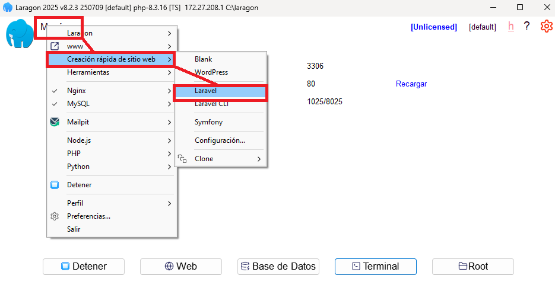
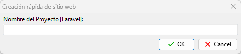
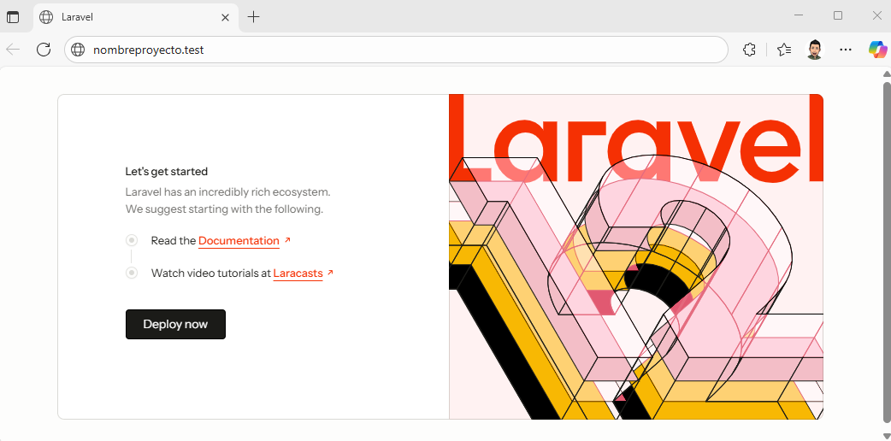
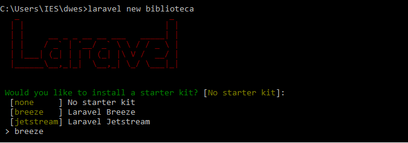
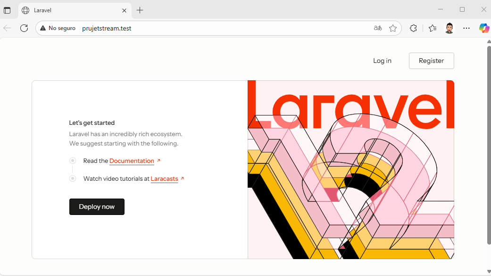
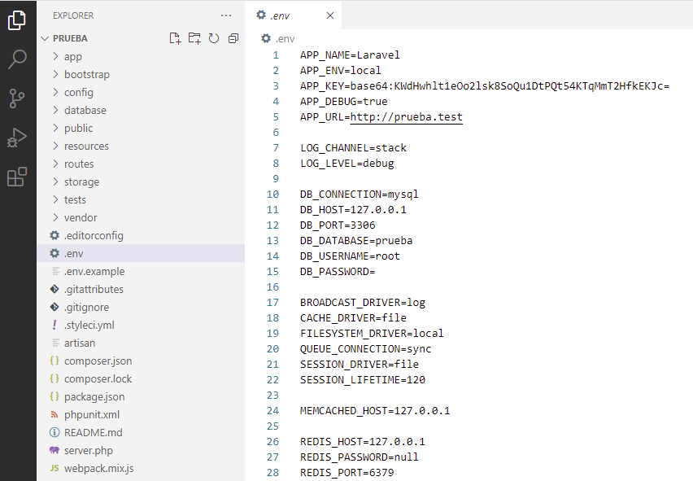
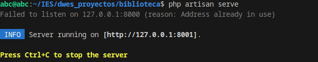
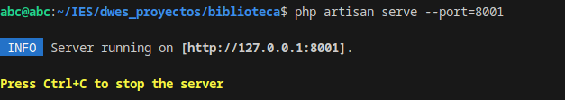
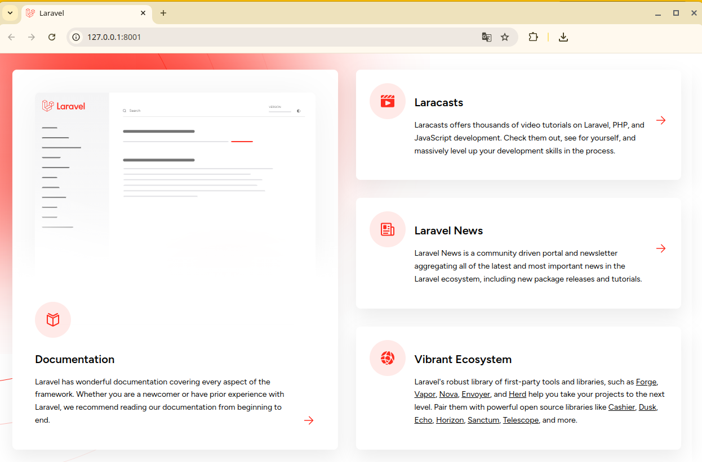

Ahora que ya tenemos todo el sistema preparado para desarrollar proyectos Laravel, veamos los primeros pasos que debemos dar para crear estos proyectos.
Documentación oficial
En este enlace podremos encontrar la documentación oficial de Laravel (en este caso, la versión 11.x). No dudes en consultarlo cuando tengas dudas!
Para crear proyectos Laravel, tenemos dos alternativas:
opción a) Emplear el comando laravel que hemos instalado en sesiones anteriores mediante composer.
opción b) Utilizar el propio comando composer para crear el proyecto. Esta opción será la recomendada si queremos crear proyectos con versiones de Laravel que no sean la última, o si por algún motivo no funciona la opción anterior.
Si empleamos el comando laravel para crear proyectos (asumiendo que ya lo tendremos instalado de la sesión de 7.3 Software necesario punto 5 Laravel), nos deberemos ubicar en la carpeta donde queramos crear el proyecto y escribir este comando:
Alternativamente, también se puede emplear la herramienta composer para crear el proyecto, usando la siguiente sintaxis (también desde la carpeta donde queramos ubicar el proyecto):
Al crear un proyecto con el comando laravel new, se creará con la última versión disponible de Laravel. En el caso de que necesitemos crear un proyecto Laravel que no utilice la última versión, sino alguna anterior, necesitamos utilizar la herramienta composer para especificar el número de versión de Laravel que queremos utilizar. Por ejemplo, este comando crea un proyecto llamado “prueba” utilizando Laravel 7:
B) Desde Menú → Creación rápida de sitio web → Laravel:
Creación rápido de un proyecto LaravelNombre del proyecto.
En cualquiera de las dos opciones, cuando hayamos terminado la instalación, podemos acceder al proyecto mediante la URL de nombre nombreDelProyecto.test:
Página incial de proyecto laravel.
Proyecto biblioteca (1): creación del proyecto
Por ejemplo, para las pruebas que iremos construyendo poco a poco en las siguientes sesiones, vamos a crear una web de libros, por lo que, en la carpeta donde queramos tener este proyecto, comenzamos escribiendo este comando:
laravel new biblioteca
Esto creará un proyecto biblioteca en una subcarpeta con el mismo nombre.
Proyecto biblioteca (1, opción b): creación proyecto usando comando composer
En nuestro caso, para el ejemplo de la biblioteca que vamos a ir desarrollando, escribiremos este comando:
Del mismo modo que en el caso anterior, se creará una carpeta biblioteca con el contenido inicial del proyecto dentro, empleando la última versión de Laravel disponible.
Posibles instalaciones de Laravel
Cuando lanzamos la orden:
laravelnewtu_proyecto
Laravel nos ofrece tres tipos de instalación:
Opciones de instalación de Laravel.
Instalación sin paquetes adicionales.
Laravel Breeze es un paquete oficial de autenticación para Laravel que proporciona una implementación sencilla y ligera del sistema de autenticación básico. Está diseñado para ser fácil de configurar y personalizar, y es una excelente opción para desarrolladores que buscan una solución rápida y sin complicaciones para gestionar la autenticación en sus aplicaciones.
b.1. Características principales de Laravel Breeze:
1. Autenticación básica: Breeze incluye todas las funcionalidades básicas de autenticación que normalmente necesitarías en una aplicación, como:
Registro de usuarios
Inicio de sesión
Restablecimiento de contraseña
Confirmación de correo electrónico (opcional)
Verificación de contraseña
2. Frontend ligero: Laravel Breeze proporciona interfaces de usuario simples y listas para usar con componentes de Blade (el motor de plantillas de Laravel) o Tailwind CSS para el diseño. Breeze también tiene soporte opcional para Inertia.js o React/Vue, que son frameworks front-end modernos. 3. Simplicidad y personalización: A diferencia de otras soluciones más completas como Laravel Jetstream, Breeze está diseñado para ser minimalista, lo que lo hace más fácil de entender y modificar para proyectos pequeños o medianos. Si solo necesitas la funcionalidad básica y prefieres hacer tus propias personalizaciones, Breeze es ideal. 4. Integración con Tailwind CSS: Breeze viene integrado con Tailwind CSS, un framework de diseño muy popular y liviano. Tailwind hace que sea fácil personalizar el diseño de la aplicación a tu gusto. 5. Opciones para front-end:
Blade + Tailwind CSS (por defecto): Usa Blade como motor de plantillas y Tailwind para el diseño.
Inertia.js (opcional): Permite crear una SPA (Single Page Application) sin tener que recargar la página completa.
React/Vue (opcional): Para los desarrolladores que prefieren usar estos frameworks de JavaScript.
b.2. ¿Cuándo usar Laravel Breeze?
Laravel Breeze es una excelente opción cuando:
Estás construyendo una aplicación pequeña o mediana.
Necesitas una solución simple de autenticación sin complejidades adicionales.
Quieres un proyecto rápido y fácil de personalizar, sin un exceso de funcionalidades predeterminadas.
Estás empezando con Laravel y deseas aprender las bases del sistema de autenticación.
Laravel Jetstream es un paquete oficial de Laravel que proporciona una estructura avanzada para la autenticación y la administración de características relacionadas con usuarios en aplicaciones modernas. Jetstream no solo ofrece la autenticación básica, sino que también incluye funcionalidades más avanzadas como la gestión de equipos, autenticación de dos factores, integración con API y más. Está diseñado para aplicaciones que requieren una experiencia de usuario robusta y características avanzadas de autenticación.
c.1. Características principales de Laravel Jetstream:1. Autenticación de usuarios: Al igual que Laravel Breeze, Jetstream incluye todas las funcionalidades básicas de autenticación, como:
Registro de usuarios
Inicio de sesión
Restablecimiento de contraseñas
Confirmación de correo electrónico
Verificación de contraseñas
2. Gestión de equipos: Una de las características clave de Jetstream es la capacidad de manejar equipos o multitenancy (múltiples usuarios trabajando juntos en un equipo). Esta característica es útil para aplicaciones colaborativas donde los usuarios necesitan gestionar sus propios espacios de trabajo o equipos. Incluye:
Creación de equipos
Invitar a usuarios a equipos
Gestión de roles y permisos en equipos
3. Autenticación de dos factores (2FA): Jetstream incluye soporte para autenticación de dos factores (2FA), lo que mejora la seguridad del sistema de autenticación al permitir que los usuarios protejan sus cuentas mediante aplicaciones de autenticación como Google Authenticator o Authy. 4. Sesiones de usuario: Permite a los usuarios ver y gestionar sus sesiones activas en diferentes dispositivos. Esto es útil si deseas implementar funciones de administración de seguridad avanzada, como cerrar sesión en dispositivos remotos. 5. API con Laravel Sanctum: Jetstream integra Laravel Sanctum, que permite a los usuarios autenticarse y gestionar tokens de API para la autenticación en aplicaciones de una sola página (SPA) o móviles. Esto es útil si estás construyendo una API que necesita tokens para gestionar sesiones y autenticaciones. 6. Opciones de interfaz con Livewire o Inertia.js:
Livewire: Jetstream puede usarse con Livewire, lo que permite crear componentes dinámicos e interactivos utilizando Blade sin escribir una sola línea de JavaScript.
Inertia.js: También puedes optar por usar Inertia.js para crear una SPA (Single Page Application) sin la necesidad de crear una API separada. Inertia te permite trabajar con frameworks JavaScript como Vue o React mientras sigues usando las rutas y controladores de Laravel. 7. Opciones de autenticación avanzadas: Jetstream soporta otras características avanzadas de autenticación, como la autenticación social (usando Laravel Socialite, por ejemplo) y la verificación de correos electrónicos automáticas.
c.2. ¿Cuándo usar Laravel Jetstream?
Jetstream es ideal cuando estás construyendo una aplicación moderna que requiere más que solo autenticación básica, y quieres características como la gestión de equipos, autenticación de dos factores, o integración con API.
Usar Jetstream tiene sentido si:
Estás construyendo una aplicación que necesita características avanzadas de autenticación y seguridad.
Quieres una interfaz de usuario dinámica e interactiva con frameworks como Livewire o Inertia.js.
Estás construyendo una aplicación donde múltiples usuarios trabajarán juntos en equipos.
Tu aplicación necesita tokens de API para autenticación en aplicaciones móviles o SPAs.
Después de instalar nuestro proyecto laravel desde una de las dos opciones que hemos visto, podemos instalar paquetes o "kits de inicio" que te ayudan a comenzar con funcionalidades de una manera más rápida.
Kit minimalista para la autenticación, que incluye login, registro, restablecimiento de contraseña, etc. Ideal para proyectos pequeños o cuando deseas personalizar el flujo.
Kit más avanzado que incluye autenticación, verificación de correo electrónico, administración de sesiones, etc. Está basado en Livewire o Inertia.js (para aplicaciones basadas en Vue.js).
Pantalla inicio para Laravel Jetstream, Fortify o Ui
Paquete para manejar la autenticación backend sin preocuparte por las vistas de frontend. Es útil si ya tienes tu propio sistema de frontend o estás usando un frontend separado (como Vue.js o React).
Cuando se crea un proyecto Laravel, se instala una herramienta llamada artisan en la raíz del proyecto. Es una interfaz de línea de comandos (CLI, Command Line Interface), que proporciona una serie de opciones adicionales que nos vendrán bien en nuestra gestión de proyectos Laravel para, por ejemplo, crear controladores, migrar datos a una base de datos, etc.
Para comprobar que está instalada y las opciones que ofrece, podemos escribir el siguiente comando en un terminal desde la carpeta del proyecto que hayamos creado:
php artisan list
Este otro comando muestra la versión de Laravel del proyecto en el que estamos:
php artisan --version
Para escribir estos comandos, podemos abrir la carpeta del proyecto con Visual Studio Code, y abrir el terminal integrado en este IDE (menú Ver > Terminal). Esto nos ubicará automáticamente en la carpeta del proyecto, y podemos directamente ejecutar estos comandos desde ahí.
Si, en un proyecto creado en Laragon, no puedes ejecutar ningún comando de php desde Visual Studio Code, deberás añadir la ruta de la carpeta de PHP en Laragon en la variable PATH de Windows (por ejemplo: C:\laragon\bin\php\php-8.3.16-Win32-vs16-x64 en Panel de control → Sistema y seguridad → Sistema → Configuración avanzada del sistema → Variables de entorno).
Como hemos comentado, podemos gestionar muy cómodamente los proyectos Laravel desde el IDE Visual Studio Code. Basta con abrir la carpeta principal del proyecto desde el propio IDE, y eso puede hacerse desde el menú Archivo > Abrir Carpeta, o bien arrastrando la carpeta a la zona principal del IDE, e incluso, dependiendo de cómo hayamos hecho la instalación, también podemos hacer clic derecho sobre la carpeta del proyecto en el explorador de archivos, y elegir Abrir con Code en el menú contextual.
Una vez abierto, tendremos la estructura del proyecto en la parte izquierda (pestaña de explorador de archivos), y podremos ir editando los archivos en la parte derecha.
Fichero .env de un proyecto laravel.
Para facilitar aún más la gestión de proyectos Laravel, podemos instalar alguna extensión adicional a Visual Studio Code. Una de las más populares es Laravel Extension Pack, que a su vez contiene una serie de extensiones para resaltar sintaxis, editar vistas, etc:
Extensión Laravel Extension Pack para Visual Studio Code.
Los proyectos Laravel se pueden gestionar abriendo la carpeta directamente desde nuestro IDE (Visual Studio Code). Cuando creamos un proyecto Laravel, se crea una estructura de carpetas y archivos predefinida. Explicamos ahora brevemente en qué consisten las principales carpetas y archivos que se generan, de acuerdo a la versión actualizada de estos apuntes.
app: contiene el código fuente de la aplicación. Gran parte de las clases que definamos estarán en esta carpeta. Inicialmente, se incluyen algunas subcarpetas dentro:
- Console: para definir nuestros propios comandos
- Exceptions: para definir nuestras propias excepciones
- Http: contiene los controladores y el middleware - Models: almacena los modelos de datos de la aplicación (clases que se utilizarán para gestionar los objetos que intervienen en el sistema).
- Providers: contiene los proveedores de servicios de la aplicación, más los que podamos definir nosotros.
- Además, podemos definir aquí otras carpetas que podamos necesitar. Por ejemplo, en versiones anteriores de Laravel se creaba aquí a mano la carpeta Models para gestionar los modelos de datos.
bootstrap: contiene el archivo app.php, que es el que pone en marcha la aplicación. Además, contiene la carpeta cache, donde se almacenan los archivos ya cargados por Laravel para acelerar su acceso en futuras peticiones.
config: contiene los archivos de configuración de la aplicación, donde se tienen variables de entorno, o si nuestra aplicación está en desarrollo o producción, o los parámetros de conexión a la base de datos, entre otras cosas.
database: almacena los elementos de gestión de la base de datos, tales como generadores de objetos, migraciones, etc.
public: contenido visible de la web. Contiene el archivo index.php, punto de entrada de todas las peticiones a la web, y además podemos definir o generar carpetas donde ubicar el contenido estático del cliente (imágenes, hojas de estilo CSS, archivos JavaScript…).
resources: contiene, por un lado, las vistas de nuestra aplicación. Por otro lado, también contiene archivos no compilados de CSS (archivos sass) y JavaScript (archivos sin minimizar u optimizar). Además, también almacena los archivos de traducción, en el caso de que queramos hacer sitios multi idioma.
routes: almacena las rutas de la aplicación, tanto para acceder a contenido web normal (web.php), como para servicios web (api.php), como para comandos y otras opciones.
storage: contiene las vistas compiladas, y otros archivos generados por Laravel, como los logs o las sesiones.
test: para almacenar los tests o pruebas sobre los componentes de nuestra aplicación
vendor: donde se almacenan las dependencias o librerías adicionales que se requieren en nuestro proyecto Laravel. Esta carpeta debería ser ignorada por Git, y regenerada cada vez que se clone el repositorio remoto, para evitar almacenar demasiada información innecesaria.
Aunque algunos de los conceptos vistos aquí pueden no estar claros aún (como el concepto de middleware, o los proveedores de servicios), los iremos viendo poco a poco durante el curso.
De entre la estructura de carpetas de un proyecto Laravel vista anteriormente, echaremos ahora un rápido vistazo a dónde se encuentra la configuración general del proyecto.
Por un lado, disponemos de un archivo .env en la raíz del proyecto, que básicamente contiene una serie de variables de entorno generales. Por ejemplo, se tiene la variable APP_NAME con el nombre que queremos que tenga la aplicación, o un conjunto de variables que utilizaremos más adelante para conectar con la base de datos, entre otras cosas:
En general, los cambios de configuración es preferible hacerlos en este archivo .env, de forma que en los archivos de la carpeta config accederemos a estas variables de entorno definidas en env.
Proyecto biblioteca (2): propiedades del archivo .env
Asegúrate de que el usuario dwes esté creado en el gestor de base de datos (MySql) con permisos para esta base de datos (biblioteca).
Ignorar el fichero env en Git
Además, el archivo .env está configurado (o debe configurarse, de lo contrario) para ser ignorado por Git, de modo que no se suba a repositorios, y se evite un acceso a datos confidenciales que pongan en riesgo el acceso al sistema.
Por otra parte, la carpeta config contiene unos archivos generales de configuración. Iremos viendo algunos de ellos en sesiones posteriores, pero, para empezar, podemos echar un vistazo al archivo config/app.php, que contiene parámetros de configuración general de la aplicación. Por ejemplo, podemos modificar el nombre de la aplicación, en la propiedad name, aunque, como vemos, el nombre lo coge de la propiedad APP_NAME del archivo .env.
'name'=>env('APP_NAME','Laravel'),
Es más habitual modificar los valores del archivo .env que los que hay en este archivo de configuración. Pero, en algunos casos, sí convendrá acudir a alguno de los archivos de esta carpeta y modificar la información que contiene.
Una vez vista la estructura de carpetas y archivos que se genera cuando creamos un proyecto Laravel, es importante también tener unas nociones básicas de cómo se interconectan los elementos internamente, y qué hace que un proyecto Laravel se pueda poner en marcha.
3.1. Los proveedores de servicios (service providers)¶
Los proveedores de servicios son los principales responsables del arranque o puesta en marcha de todo proyecto Laravel, lo que se conoce como bootstrapping. Se encargan de registrar los componentes del proyecto, dependencias externas, clases y métodos definidos por nosotros, para hacerlos accesibles al resto de la aplicación.
Si abrimos el archivo config/app.php de nuestro proyecto Laravel, veremos entre otras cosas una sección denominada providers, donde se define un array con todos los proveedores de servicios que se ponen en marcha al arrancar la aplicación. Por ejemplo, hay proveedores de servicios para acceso a la base de datos (DatabaseServiceProvider), autenticación de usuarios (AuthServiceProvider), etc.
Para poder desarrollar los componentes de las aplicaciones Laravel, es necesario contar con una infraestructura previa de clases que nos faciliten esta tarea. Así, a lo largo de las siguientes sesiones haremos uso de algunas clases proporcionadas por Laravel que vienen preinstaladas con el framework, tales como Model, Route, etc, y que nos permiten o bien heredar de ellas para crear otras subclases (como es el caso de los modelos de datos) o bien utilizar algunos métodos de utilidad que estas clases proporcionan (como es el caso de la clase Route, por ejemplo).
Conviene tener presente que todas estas clases pertenecientes al núcleo de Laravel parten de un espacio de nombres común llamado Illuminate, por lo que, en los archivos fuente donde las utilicemos, será frecuente encontrar instrucciones use que comiencen por dicho espacio de nombres. Por ejemplo:
Además de los dos pilares anteriores sobre los que se sustenta fundamentalmente el desarrollo de proyectos en Laravel, podemos hablar de otros elementos que nos pueden resultar de utilidad en el desarrollo, como son los facades y los contracts.
Las facades proporcionan una interfaz estática a los elementos de la aplicación, de forma que facilitan el acceso a ciertos métodos o utilidades. Por ejemplo, la facadeCache permite acceder de forma sencilla con su método get a ciertas propiedades cacheadas previamente.
return Cache::get('key');
Los contracts son un conjunto de interfaces que proporcionan el núcleo de servicios ofrecidos por Laravel. Por ejemplo, métodos para enviar e-mails, o encolar tareas en una cola de prioridad, etc.
Existen varias formas de probar o poner en marcha un proyecto Laravel, dependiendo de si estamos desarrollándolo y probándolo (en cuyo caso buscamos ponerlo en marcha fácilmente), o si ya lo hemos puesto en producción. Resumidamente, veremos tres formas de poner en marcha el proyecto:
De forma local al proyecto, a través de la herramienta artisan
De forma local a XAMPP, ubicando el proyecto en una carpeta predefinida
De forma general en el sistema, definiendo un host virtual conectado con Apache
La tercera forma será la que necesitemos utilizar si queremos poner la web en producción en un servidor real, ya que en estos casos cada aplicación tiene su propia configuración y ubicación diferente al resto. Las otras dos primeras opciones pueden resultarnos útiles para pruebas sencillas durante el desarrollo.
Para poder probar nuestro proyecto Laravel, además de configurar y poner en marcha el servidor correspondiente es necesario habilitar permisos de acceso y escritura a ciertas carpetas del proyecto, especialmente en sistemas Linux o Mac, si movemos el proyecto a una carpeta con permisos reducidos.
Carpeta storage junto con sus subcarpetas y contenidos. En esta carpeta se compilarán las vistas, se generarán los archivos de log, etc, por lo que conviene que esta carpeta tenga permisos de escritura.
Subcarpeta bootstrap/cache, donde se almacenará la caché de los archivos ya cargados.
Para habilitar los permisos en estas carpetas bajo Linux o Mac OSX, podemos ejecutar estos comandos desde la raíz del proyecto (la opción -R aplica los permisos de forma recursiva):
El tercer comando no sería necesario en principio, ya que la subcarpeta logs está dentro de la carpeta storage, y se aplican los cambios de forma recursiva.
Sin embargo, es posible que en algunas situaciones esta subcarpeta se cree a posteriori y no tenga los permisos adecuados. Comprobaremos al cargar la aplicación desde el navegador si existe algún error al inicio. En este caso, el propio error indicará que no puede generar el log, y deberemos escribir ese comando.
La forma más sencilla de probar nuestro proyecto es a través del comando artisan. Nos ubicamos en la carpeta raíz del proyecto (recuerda que esto se puede hacer automáticamente abriendo la carpeta con Visual Studio Code y abriendo su terminal), y ejecutamos este comando:
php artisan serve
Error en puesta en marcha
Si tras ejercutar la orden php artisan serve desde el terminal (preferiblemente en VS Code --> Ctrl + `) muestra el siguiente error:
Error de utilización de puerto por otro servicio o proyecto.
es debido a que el puerto 8000 ya está en uso, por lo que deberemos lanzar el proyecto desde otro puerto con la orden:
phpartisanserve--port=8001
Esto habilitará un pequeño servidor local, y se nos indicará en un mensaje en el terminal la URL que podemos emplear para probar el proyecto, que suele ser algo así:
Proyecto en marcha desde php artisan serve.
Conectando a la URL que se nos facilita, veremos la pantalla de inicio de nuestro proyecto, que será algo así (aunque el diseño de la página de inicio puede variar dependiendo de la versión de Laravel que usemos):
Página de inicio de proyecto laravel.
Más adelante aprenderemos a modificar esta página de inicio, obviamente, y a ir añadiendo otras.
Si nuestra aplicación necesita acceder a una base de datos, además de arrancarla con el comando artisan visto antes, también tendremos que tener en marcha el servidor de bases de datos correspondiente, a través del manager de XAMPP.
4.3. Puesta en marcha en carpeta predefinida de XAMPP¶
Como segunda alternativa relativamente rápida, podemos ubicar la carpeta del proyecto dentro de la carpeta predefinida de XAMPP para alojar webs:
En el caso de Windows es la carpeta htdocs dentro de la carpeta de instalación de XAMPP. Típicamente la ruta es C:\xampp\htdocs
En el caso de Linux, en particular en la distribución de nuestra máquina virtual, es la carpeta /opt/lampp/htdocs
En el caso de Mac OSX, la ruta es /Applications/XAMPP/xamppfiles/htdocs
A continuación debemos poner en marcha el servidor Apache (empleando el manager de XAMPP), y luego acceder a la URL http://localhost/biblioteca/public. Obtendremos la misma página de inicio que en el caso anterior.
Al mover la carpeta del proyecto a la ubicación de XAMPP en Linux, ten en cuenta que esa carpeta es de acceso restringido. Deberemos dar permisos a las carpetas indicadas para que la aplicación se pueda poner en marcha adecuadamente.
Proyecto biblioteca (3): puesta en marcha
En Linux, escribimos este comando desde la carpeta que contiene nuestro proyecto:
En el caso de una puesta en producción real, o si queremos dejar una aplicación correctamente configurada con Apache, hay que realizar una serie de pasos previos, tales como asociarlo a un virtual host (de Apache, en nuestro caso). A continuación indicamos los pasos a seguir, y conviene tener presente que:
El paso 1 deberemos hacerlo sólo una vez, cuando demos de alta nuestro primer virtual host con Apache.
El resto de pasos deberemos hacerlos una vez por proyecto para configurar dicho proyecto en Apache y establecer los permisos adecuados.
paso 1. Habilitar los virtual hosts en Apache
Los virtual hosts son un mecanismo que ofrecen los servidores web, como Apache, para poder asociar carpetas arbitrarias del sistema, externas a la estructura de Apache, al propio servidor, de forma que, accediendo a una URL o nombre de dominio determinado, le indicamos a Apache que cargue los contenidos de esa carpeta.
En primer lugar debemos habilitar los virtual hosts en Apache, editando el archivo de configuración de Apache:
En Linux, archivo /opt/lampp/etc/httpd.conf.
En Windows, archivo C:\xampp\apache\conf\httpd.conf de la carpeta de instalación de XAMPP(suponiendo que lo hemos instalado en C:\xampp).
En Mac OSX, archivo /Applications/XAMPP/xamppfiles/etc/httpd.conf.
En todos los casos, debemos asegurarnos de que está descomentada la línea que hace referencia al lugar donde se definen dichos virtual hosts.
Después, debemos editar el archivo hosts del sistema y asignar un nombre de dominio (local) a nuestro proyecto. Dicho archivo de hosts es:
/etc/hosts en Linux.
C:\Windows\System32\drivers\etc\hosts en Windows.
/private/etc/hosts en Mac OSX.
Proyecto biblioteca (4): añadir nombre de dominio
Por ejemplo, para el proyecto biblioteca que hemos creado antes, podríamos definir algo como esto (al final, o entre los otros registros de nombres existentes en dicho archivo):
127.0.0.5 biblioteca
Lo que hemos hecho ha sido asignar la IP local 127.0.0.5 (puede ser la IP local que nosotros queramos) al nombre “biblioteca”. De este modo, cuando carguemos localmente el proyecto podremos acceder a él mediante la URL http://biblioteca o bien con http://127.0.0.5.
paso 3. Definir la configuración del nuevo virtual host
A continuación, debemos editar el archivo al que hacía referencia la línea que hemos descomentado antes en el paso 1: el archivo httpd-vhosts.conf, y añadir una nueva configuración para nuestro nuevo virtual host.
La ruta indicada en el atributo DocumentRoot dependerá, evidentemente, de la ruta donde tengamos alojado nuestro proyecto biblioteca. El ejemplo anterior se ha ilustrado suponiendo que el proyecto biblioteca se ubica en una carpeta ProyectosLaravel en la carpeta de usuario de nuestra máquina virtual.
Vamos a indicar ahora unas instrucciones necesarias en el caso de que queramos importar un proyecto Laravel a un nuevo ordenador, o llevarlo a otro diferente, descargándolo de, por ejemplo, un repositorio GitHub, o comprimido en un archivo ZIP o similar. Dado que ciertas carpetas y archivos no se suben a dicho repositorio (o no deberían subirse), es conveniente saber cómo regenerar estos elementos en la nueva ubicación del proyecto.
Si queremos exportar o compartir un proyecto Laravel de forma externa, podemos:
Compartirlo en un repositorio remoto tipo GitHub o similar. En este caso, el propio archivo .gitignore que se crea en el proyecto indica qué elementos no van a subirse al repositorio. De entre estos elementos, conviene destacar el archivo de configuración .env, y las carpetas vendor y node_modules.
Comprimirlo en un archivo que poder distribuir o instalar en otras partes. En este caso, debemos tomar las mismas precauciones que cuando lo compartimos vía GitHub, y eliminar los elementos que no sean necesarios.
Cuando comprimas un proyecto Laravel, procura comprimir la carpeta entera desde fuera, para así incluir también los archivos ocultos, como .env.example. De lo contrario, no será posible poner en marcha el proyecto en el lugar donde se utilice. Así que, simplemente, elimina las carpetas pesadas (vendor y node_modules), archivos que no quieras compartir directamente (.env, si es el caso) sal a la carpeta padre y comprímela.
A la hora de importar en un nuevo ordenador un proyecto existente (bien descargándolo de GitHub, o descomprimiéndolo de un archivo ZIP), debemos dar estos pasos (una vez descargado o descomprimido el proyecto).
1. El archivo de configuración de variables de entorno .env
Como hemos comentado antes, el archivo .env es uno de los que no se incluye por defecto en un repositorio GitHub, ya que contiene información sensible, como la contraseña de acceso a la base de datos. Sin embargo, lo que sí se incluye es una copia inicial del mismo, en el archivo .env.backup o .env.example, dependiendo de la versión de Laravel que utilicemos. Basta con hacer una copia de dicho archivo en la carpeta raíz del proyecto…
cp.env.example.env
… y luego editar dicho archivo para establecer la configuración oportuna en el lugar donde hayamos importado el proyecto: parámetros de conexión a la base de datos, y otras variables de entorno que iremos viendo en este curso.
2. La clave del proyecto
Laravel necesita de una clave en la variable de entorno APP_KEY del archivo .env anterior, que por defecto está vacía. Dicha clave es un código aleatorio de 32 caracteres, que Laravel emplea para encriptar cookies. Podemos generar una clave con el comando php artisan (desde la raíz del proyecto):
php artisan key:generate
y ya la tendremos lista en nuestro archivo .env.
3. Dependencias PHP
Otro de los elementos del proyecto que no se comparte en repositorios es la carpeta vendor, donde vienen descargadas las dependencias PHP de nuestro proyecto. Por defecto, al generar un nuevo proyecto Laravel, se presuponen algunas de ellas, incluidas en el archivo composer.json de la raíz del proyecto. Para volverlas a instalar en donde hayamos clonado el proyecto, ejecutamos este comando desde la raíz del proyecto (suponiendo que ya tengamos instalado el comando composer de pasos anteriores):
composerinstall
4. Dependencias JavaScript
Del mismo modo, existen algunas dependencias para la parte de cliente (como por ejemplo Bootstrap, o jQuery), definidas en el archivo package.json de la raíz del proyecto, y que se encuentran preinstaladas en la carpeta node_modules. Esta carpeta, sin embargo, tampoco se comparte en el repositorio, así que para volverla a generar en el proyecto clonado, y suponiendo que también tendremos instalada la herramienta npm de pasos anteriores, ejecutamos el comando siguiente desde la raíz del proyecto: